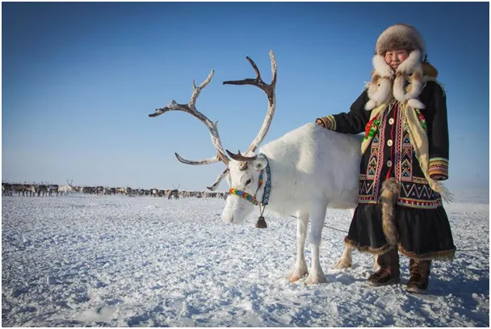
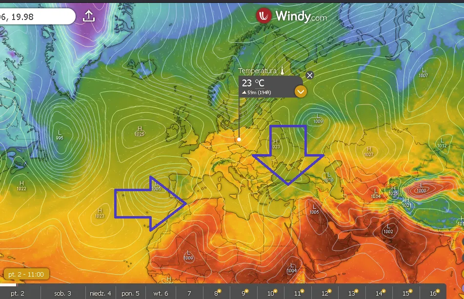
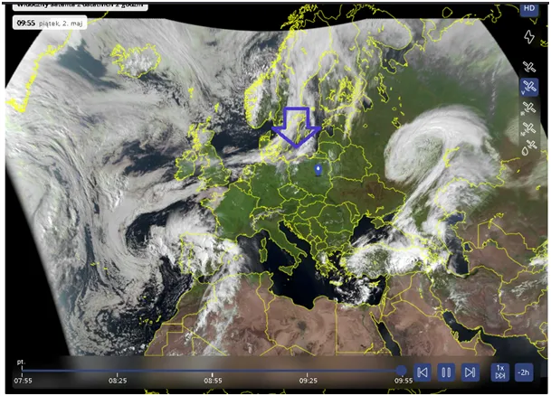
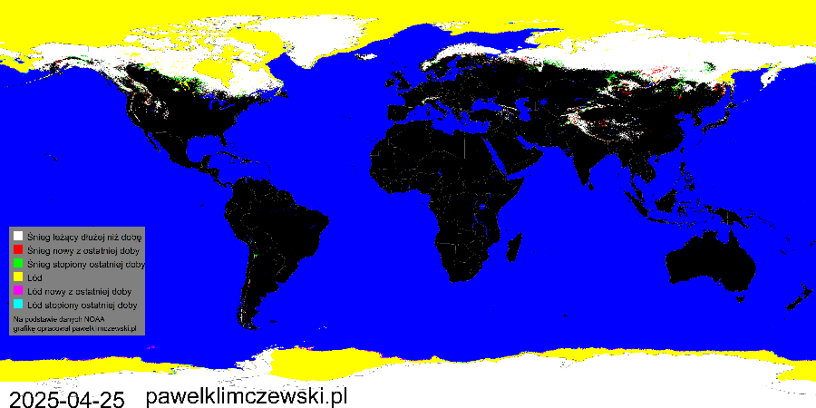
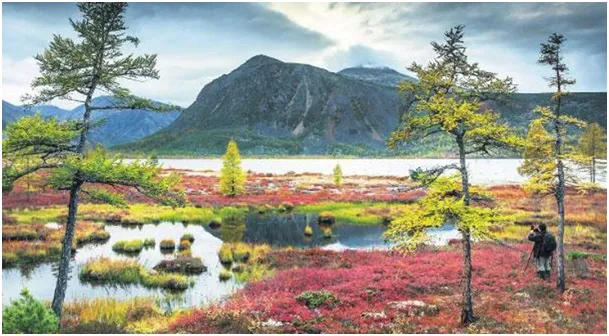
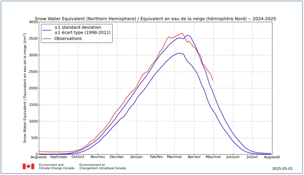

Czy kolejny rok z rzędu zima w Arktyce wygra ?
Majowe Słońce świeci już wysoko, w południe 53 st. nad horyzontem i szybko rozgrzewa grunt. O 10:00 na zachodzie Polski ziemia miała już do 30 st., co wróży bardzo ciepły dzień. Przyspieszy to wegetację i parowanie wody z liści i gruntu.

Cieszmy się taką pogodą, bo zazdroszczą nam jej Hiszpanie i Turcy. Te południowe kraje smagane są deszczami i chłodnymi wiatrami z północy. Tak to jest, że północ zsyła na południe zimne powietrze, aby się nagrzało i ustąpiło miejsca ciepłym frontom znad oceanu.

I tak dzieje się teraz, wielki niż kieruje w naszą stronę wilgoć i chmury znad Atlantyku, dzięki temu temperatura spadnie nieznacznie. Dopiero po niedzieli drugie ramię niżu ściągnie z północy arktyczne powietrze, dlatego w poniedziałek rano będą potrzebne ciepłe ubrania. Niestety, wygląda na to, że nie są to przedwcześni Zimni Ogrodnicy, północne wiatry zostaną z nami na kolejny tydzień, niestety ze skromnymi opadami.

Popada obficie w głębi Rosji i to często obfity śnieg. Azja jest bezkresem, który teraz oddaje teren wiośnie, ale robi to niechętnie. Syberyjskie krajobrazy dobrze znane wielu Polakom emanują siłami przyrody i jej potęgą. Ludzie tam żyjący do ubiegłego stulecia często nie znali naszego świata. Wbrew powszechnym opiniom, że ich życie duchowe to prymitywne wierzenia wierzą w jednego, osobowego twórcę nieba i ziemi nazywają go Tengri (Tanry). Słowo to też opisuje Boga u Turków, którzy pochodzą z Syberii. Słowo Allah pojawiło się u nich dopiero, gdy przyjęli islam zdobywając tereny na Bliskim Wschodzie.

Zanim w Azji środkowej poznano naszą kulturę Europa 1500 lat wcześniej usłyszała o Tengri od Hunów dobijających Imperium Rzymskie. Ci koczownicy osiedli nad Dunajem i stali się naszymi ulubionymi bratankami, Węgrami.

Pokrywa śnieżna półkuli północnej od dwóch tygodni topnieje wolniej niż wieloletnia norma mimo, że proces ten zaczął się wcześniej niż zwykle, co widać na pierwszym wykresie. Ilość wody uwiezionej w śniegu jest nadproporcjonalnie większa od zajmowanego terenu. Oznacza to, że lodowo-śnieżna czapa kolejny rok z rzędu jest grubsza i jeśli nie stopnieje do końca lipca to co napadało zimą powiększy masy lodu rosnące od kilku lat, gdy to obserwujemy. O procederze ukrywania tego przez służby meteorologiczne pisałem tutaj: https://pawelklimczewski.pl/2024/08/15/cud-znikajacego-sniegu
Paweł Klimczewski